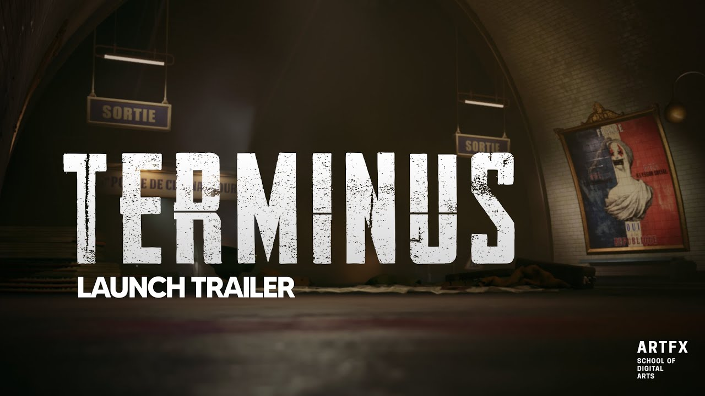
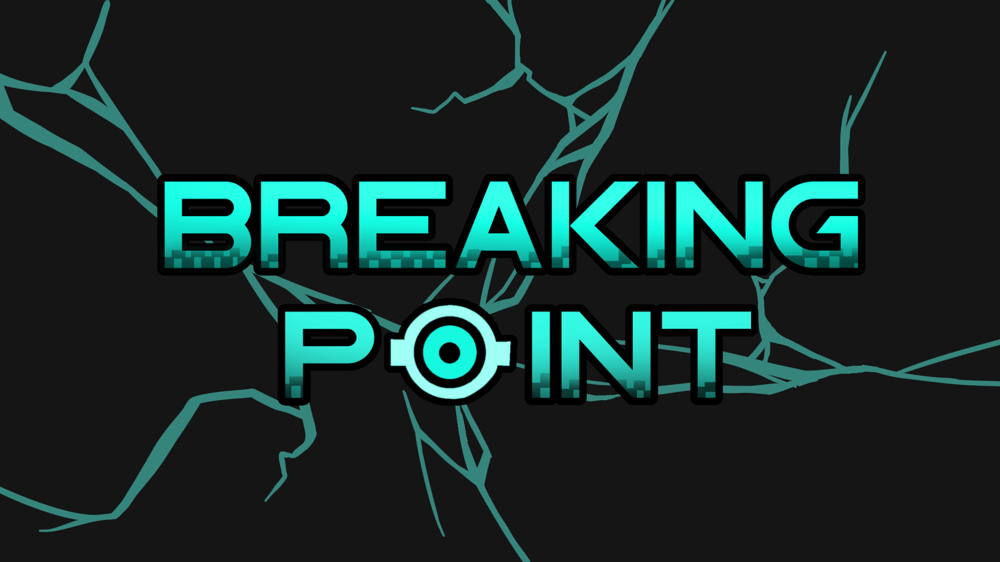
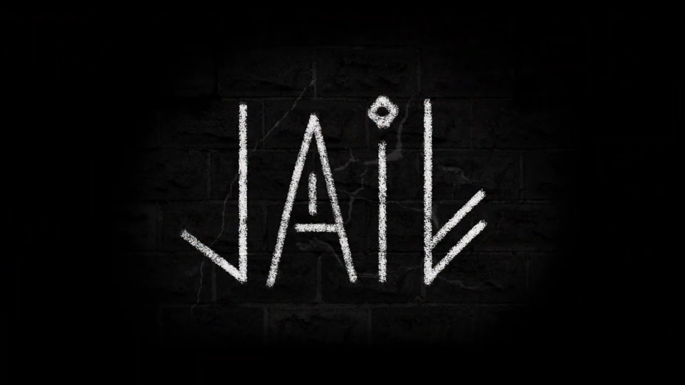
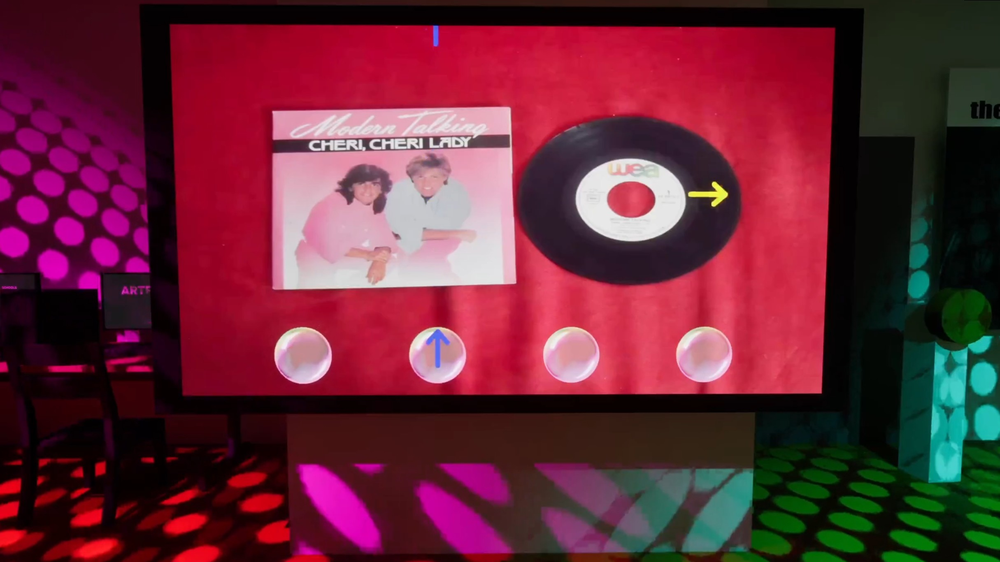
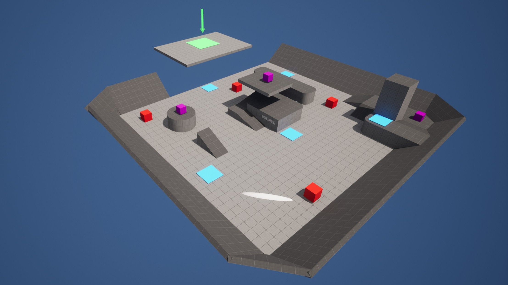
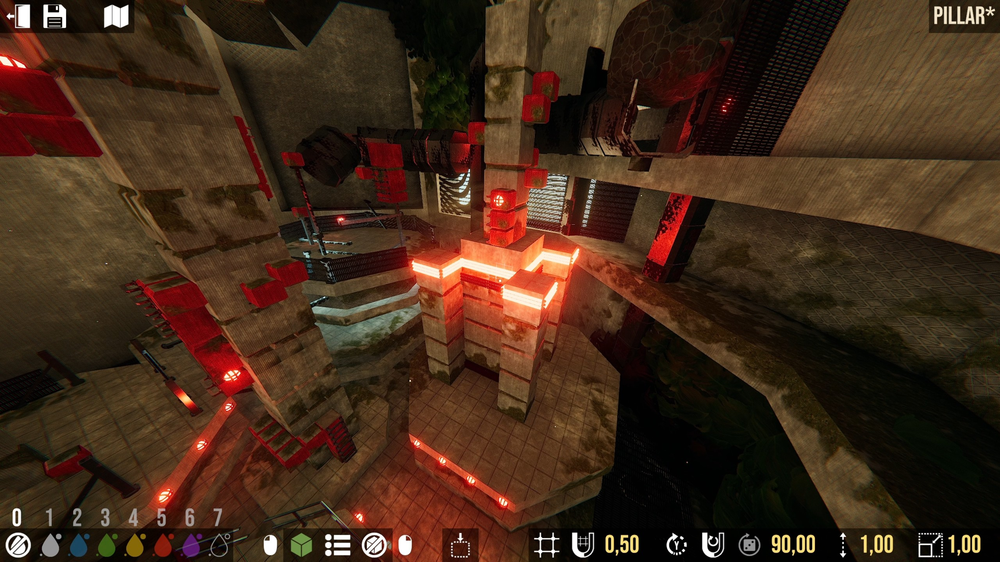
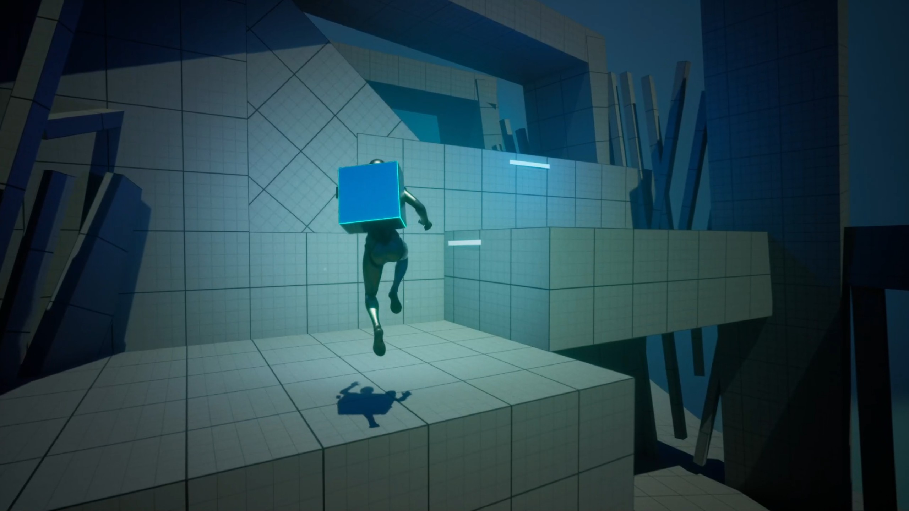
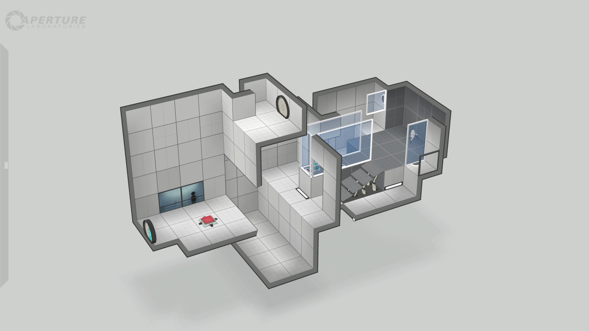

Big Cop Big Moto
En tant que hors-la-loi, échappez à la police en empruntant des chemins risqués à travers une ville post-apocalyptique
As an outlaw, escape the police by taking dangerous shortcuts through a post-apocalyptic city

Terminus
1968. Sous les rues de Paris, une horreur s'éveille. Plongez dans les tunnels du métro infesté et empêchez l'inimaginable de remonter à la lumière
1968. Beneath the streets of Paris, a horror awakens. Dive into the infested metro tunnels and prevent the unthinkable from returning to the light

Breaking Point
Dans une mégalopole dystopique, un taxi IA piraté commence à penser par lui-même. Qui est au volant… et jusqu'où ira-t-il ?
In a dystopian megalopolis, a hacked AI taxi starts thinking for itself. Who's driving… and how far will it go?

Jail
Perdu dans une prison oubliée, découvre des pouvoirs enfouis en toi. Entre force et esprit, trouve l'équilibre pour t'échapper
Lost in a forgotten prison, discover powers buried within you. Between strength and spirit, find the balance to escape




